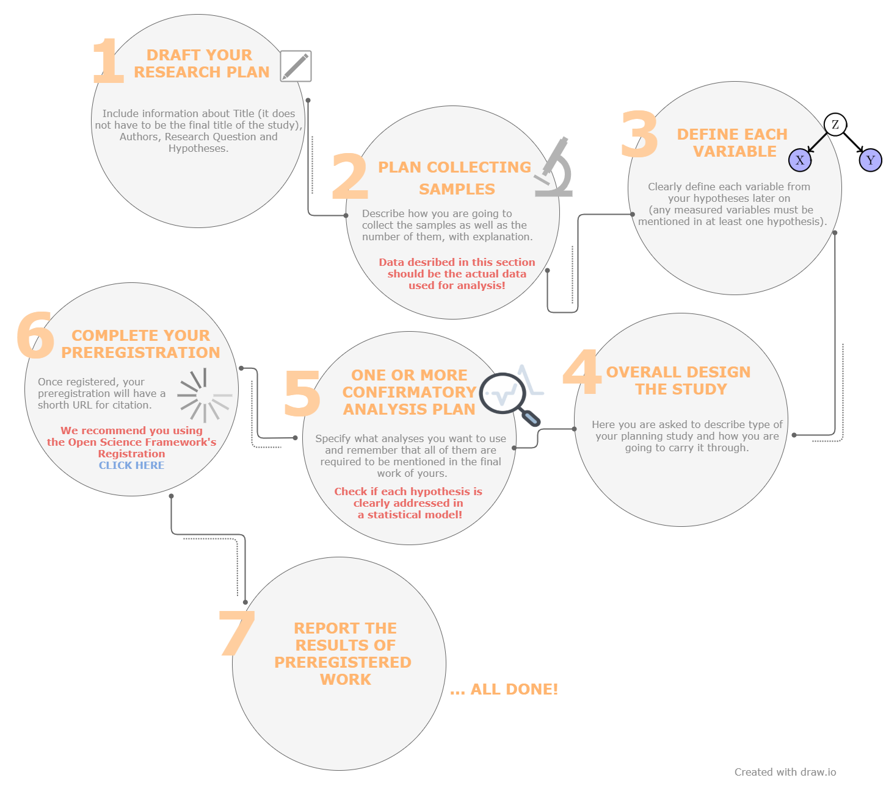
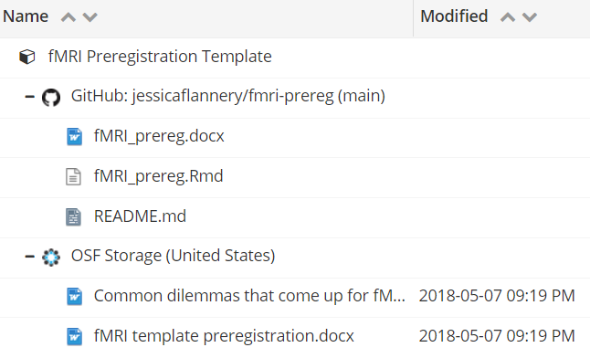

Guide to reproducible neuroimaging¶
Contents¶
# reproducible-neuroimaging
Introduction¶
The progress of science is based on valuable research. While reading the research paper you naturally trust the researchers that the presented results are true and that you can build your research upon them. Recent reports show, however, that scientists are not able to reproduce a large amount of published research. In this section we introduce you to the concept of reproducibility in research, reasons of reproducibility crisis, and motivations to lead reproducible research. Finally, we present you three steps that might improve reproducibility in your research.
Reproducibility in science¶
The goal of scientific research is to build reliable knowledge. To approach this, scientists should be able to repeat the analysis and replicate findings of other researchers. The individual research should be transparent and well documented so it can be verified by other scientists.
Reproducibility stands for “obtaining consistent results using the same input data, computational steps, methods, and code, and conditions of analysis”. It is also important to distinguish the reproducibility from replicability that stands for “obtaining consistent results across studies aimed at answering the same scientific question, each of which has obtained its own data” [NAS, 2018]. In contrast, the term robustness of research means that you can obtain consistent results using the same data but different analyses Finally, generalizability of research means that you can obtain consistent results using different data and analysis.

This image was created by Scriberia for The Turing Way community and is used under a CC-BY licence. The image was obtained from https://zenodo.org/record/3332808.
Reproducibility crisis¶
Intuitively, the published research results should be reliable and trustworthy. Recent alarming reports showed that it is difficult to reproduce or replicate results in various medical, life and behavioural sciences (Open Science Collaboration, OSC 2015). According to Stanford Encyclopedia of Philosophy, evidence suggesting that we face reproducibility crisis include:
absence of replication studies in the published literature in many scientific fields (e.g., Makel, Plucker, & Hegarty 2012),
failure to reproduce results of published studies in large systematic replication projects (e.g., OSC 2015; Begley & Ellis 2012),
evidence of publication bias (Fanelli 2010a),
a high prevalence of “questionable research practices”, which inflate the rate of false positives in the literature (Simmons, Nelson, & Simonsohn 2011; John, Loewenstein, & Prelec 2012; Agnoli et al. 2017; Fraser et al. 2018), and
the documented lack of transparency and completeness in the reporting of methods, data and analysis in scientific publication (Bakker & Wicherts 2011; Nuijten et al. 2016).

Reasons of reproducibility crisis¶

Motivations for reproducible research¶
If scientists study phenomena that are ubiquitous in the world, there should be no contraindications for the research and the articles published on their basis to be available to everyone. That is why reproducible science encourages researchers to:
create open access platforms, tools and services for researchers and students to make data suitable for re-analysis,
share the process of creating knowledge (real science is not only about published articles, but also the steps behind the creation of an article),
promote science available to everyone interested (thanks to open repositories).
For many scientists who already have a lot of experience and established patterns, it is certainly not easy to start new practices of using specific platforms (improving the entire research process, but only after we learn how to use them). This guide aims to introduce resources to help you create reproducible neuroimaging research. Reproducible research brings many benefits to the entire research community. Nowadays, open research practices are becoming more popular in the academic community, as evidenced by the results of metastudy (Mckiernan et al. 2016), which show that open access articles are cited more frequently.

Open research aims to transform research by making it more reproducible, transparent, reusable, collaborative, accountable and accessible to society. Reproducibility forces changes in the way research is conducted and disseminated using digital tools in the form of open science - the practice of publishing “primary results of publicly funded research - publications and research data.
Three steps to more reproducible research¶
The goal of this handbook is to guide you through essential research practices that will increase reproducibility in your neuroimaging research. For simplicity, we divided this material into 3 steps: (1) share your research plan, (2) share your data, and (3) share your code.
Step 1: Share your research plan
Here we guide you on what you should know before starting collecting your data and/or performing a new data analysis. We introduce you to concepts of pre-registration and pre-registered reports.
Step 2: Share your data
Here we help you to set up your data management plan, structure and name your project files, and share your data in open repositories.. We introduce you to Brain Imaging Data Structure (BIDS) formatting and controlling versions of your data with DataLad.
Step 3: Share your code
Here we explain how to create a reproducible data analysis workflow. We introduce you to concepts of version control (Git/GitHub), containers (Docker), and good practices for coding and documenting your analysis.
Preregistration¶
Preregistration is the practice of registering research plan before it is conducted. The preregistered report format requires reseachers to submit a description of the confirmatory hypotheses, variables, study methods and analysis plan prior to data collection. This practice allows researchers to circumvent the publication bias toward significant findings and prevent the data from taking you hostage. Preregistration makes the distinction between hypothesis testing and exploratory (hypothesis generating) research more clear. Data set won’t affect hypothesis and vice versa.
Click here to see some examples of preregistrations segregated by discipline and study type.
Types of preregistration¶
Unreviewed
Unreviewed registration report contains detailed description of researcher’s plans for a study as possible, and researcher saves those plans in a time-stamped, uneditable archive; can be shared with reviewers, editors, and other researchers.
Reviewed
In reviewed registration report researcher submits a detailed proposal for a study to a journal before conducting the study (these registered reports have the same virtues as preregistration, but they also address the problem of publication bias because the studies are published regardless of their outcomes!); proposed study will be informative regardless of its outcome.
RRR - Registered Replication Reports
In registered replication reports researchers direct replication of one or more original findings. Many labs follow the same preregistered plan, and the results from all of those independent studies are published collectively regardless of the outcomes of individual studies.
How to make a preregistration?¶
Open Science Framework allows to follow a simple template at Word / GoogleDocs or you can use another site: AsPredicted and fill it with your own research ideas.
To illustrate the preregistration process, we created a simple example of the whole process:
Template for fMRI research preregistration¶
To be more specific and for the purposes of this documentation, we extract a preregistration report specifiaclly for fMRI research, by clicking here (Flannery, 2020).
{kind=link}
Any solution put in following template selected by the author is a suggestion of practices for reported fMRI methos put forth by Nichols et al., 2016 & Poldrack et al., 2008. The whole documentation is available on GitHub so everyone can contribute and improve the whole statement.
Rules of preregistration¶
Once registered, your preregistration will have a short URL for citation. Remember to include a link to your registration report.
Report the results of ALL preregistered analyses regardless of outcome.
ANY unregistered analyses must be transparently reported as exploratory finding Do not stop yourself before make transparent changes to analysis plan but remember to report the change and its justification (it have to be reported somehow as intuitive suggestions).
Why all researchers should preregistrate?¶
Eric-Jan Wagenmakers and Gilles Dutilh published in 2016 an article with seven selfish reasons for preregistration. In the arguments invoked, they highlight the personal benefits of pre-registration and the increased potential for success in an academic career. This section will be based on the proposals proposed by the authors.

Preregistration allows you to get credit for having been able to anticipate.
By designing repetitive workflows and sharing them with the different components of our research project, we can allow others to gain an in-depth understanding of our work. This encourages them to review our methods, test our code, propose useful changes, and make informed contributions to the further development of our project.
Preregistration is exciting.
Researcher cannot tinker with the analysis in a post hoc fashion. It means that researcher stands before a clear question: will the theory be confirmed or disconfirmed?
Preregistration prevents you from being taken hostage by your own data.
Each software has errors. The analysis of the software that supports the spacecraft shows that, despite being carefully checked, it still has bugs. It may cause bugs that transforms results. Performing pre-registration and sharing data allows you to improve the operation of subsequent stages of data analysis. There are free testing platforms for testing open source projects (CircleCl, Travis) and automatically running software tests when there is news on Github, and notifications say whether a bug has been found or everything is working well.
Preregistration is easy.
When a scientist has an idea for his work, the pre-registration process itself is very much easier, especially thanks to platforms such as Open Science Framework or As Predicted (as above) where we can easily gather all the information. Well-documented analyzes help us maintain easy access to all project outputs that can be effectively saved. By working in a team, colleagues can easily earn credit for their contributions. In addition, by using the underlying dataset and methods, we can easily adhere to top-level journal guidelines.
Preregistration increases your reputation.
Preregistered experiments are the signal of researchers’ confidence. Scientist who is not afraid to submit his or hers theories to an unambiguous test is the best factor of scientificity. It also shows that scientist wish to conduct science in a transparent way and have done everything in hers or his power to shield herself or himself from hindsight bias and confirmation bias. Applying reproducibility practices separately across different parts of a project, such as data, independently executable codes and scripts, protocols and reports, allows other researchers to test and reuse our work in their research, and ensures fair recognition of our work. Scientists who publish their work with basic information are cited more often because their research results can be widely replicated and trusted. This fair credit system encourages researchers to continue to maintain repetition in their work.
Preregistration allows you to have manuscripts accepted “in principle“ regardless of how the results pan out.
It is possible to make a preregistration proposal to a journal that offers Registered Report format (mentioned earlier in Types of preregistration section). Thanks to approvment of preregistration proposal, regardless of the results, the journal provides publication of the results regardless of whether they confirmed the hypothesis, or not. It also allows you to improve the registered report thanks to reviewer’s comments before the data collection process begins.
Preregistration can shield you from post hoc critique.
Repetitive research must include the complete history and narrative of the project planning and development process. This includes information about the data, tools, methods, codes and documentation used in the research project. By keeping a complete history of our work, we can ensure the durability of the research, the reliable citation / recognition, and the usefulness of our and other work in our research fields. Preregistration protects the researcher from the influence of unwanted factors such as hidden moderator, inadequate manipulation check, different instruction and others. If you allow reviewers to take look at your plan of research, you will have it checked by scientists from your field.
Data sharing process¶
Open data availability makes it possible to verify the accuracy of published findings - publicly available data are exposing fewer statistical errors (Witchers et al. 2011) - and encourages researchers to conduct innovative analyzes. In our case, the whole process is simplified as neuroimaging uses an entirely digital data generation process.
Ethical approval¶
Optimism about propaging reproducible science is challenged by the increasingly complex ethical, legal and social issues it raises. Reporting of scientific methods is no longer sufficient to address the complex relationship between science and society.
The 1st step is to plan data sharing, which is associated with the ethical approval of the respondent before starting the research procedure. Ethical approval requires an explicit formal consent of the study participant to share the collected data.
We encourage every researcher to use the developed format included in documentation which consist set of templates possible to insert into existing consent forms after minor adjustments. To see ultimate consent forms you can use to your research, go here.
Open data sharing platforms¶
The 2nd step is a submission to a repository before publishing an article allows the author to indicate to readers and reviewers the specific location of the collected data. The data itself may be used for other research in the future.
There is an widespread repository in the research community accepting data from human neuroimaging:
OpenfMRI platform dedicated to the free and open sharing of raw magnetic resonance imaging (MRI) datasets.
Every database stored to this repository conforms to the BIDS data organization scheme.
Attach a license¶
Data is processed differently by the legal system than creative works, therefore they require special licenses.
Major scientific institutions recommend using an unrestricted Public Domain license such as CC0 which has universal form and it may be used throughout the world for any kind of content without adaptation to account for laws in different jurisdictions. To see more information, click here.